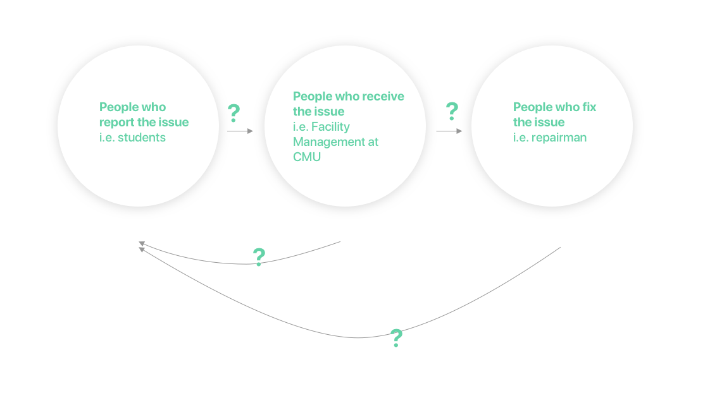

EasyFix
Collaborators
None
Time-frame
7 days | Feb 2020
Project overview
This project is about visualizing a complex system – the isolation of the elderly. The goal of this project is to visualize the problem in a comprehensive and presentable way and to cultivate systematic thinking.
Through incorporating the significance, external and internal causes, effects, and interventions of the problem, were able to reflect the most important aspects of this problem. More importantly, we learned how design is within the larger social, economic and political context, and how learning about other systems can help us generate better solutions.
01 Understanding the Task
1.1 The Interpretation of the Task
There are three main stakeholders involving in the whole process: people who report the issue, receive the issue and fix the issue.
This task can also be interpreted as how the information should flow between these three parties. Some thoughts had immediately come to my mind:
- Communication should be circular rather than linear.
- How to make sure it is a positive feedback loop?
- How to make the communication effective, efficient and transparent?
02 Understanding the Stakeholders
2.1 CMU Facility Management
To understand more about CMU Facility Management, I decided to both conduct interviews with some CMU staff and do secondary online research.
Interview with two CMU facility managers
- Reporting the facility issues is very crucial for the upkeep of the facility and prevention from danger. If some emergent issues such as broken radiator are not reported or discovered promptly, they will cause very serious dangers.
- I understand the whole reporting process through talking them. The facility coordinators receive the report from students and then transfer the message to the facility management. After the issues have been confirmed, they will then delegate the work to people who are specifically in charge of certain issues. Finally, a maintenance man will arrive at the spot to fix the issue.
- Sometimes the students can’t explain the issue very clearly so that they need to check by themselves.
- There are different levels of emergency. Some issues are much more urgent than others. However, a lot of the students don’t know whether a certain situation counts as a emergency.
Research on the existing reporting system
- There are different categorizations for different issues. However, reporting academic building issues and housing issues are done on two different platforms.
- The reporting interface is not user-friendly. It is hard to fill out the form on mobile devices. The drop-down menu is so long that the user may need to spend a lot of time finding the information they want.
- They list out the important information that students need to provide while reporting the issues.
2.2 Students
To understand CMU students and their habits of reporting issues, I conducted interview with three CMU students, trying to find out:
- How do they usually report facility issues
- What are some issue they are facing while reporting
- What prevents them from reporting certain issues
- If they expect feedback from the Facility Management or not
Interview with CMU students:
- Most of them had experience on reporting the on-campus housing issue because they thought they were more related to their personal lives.
- They would want to report an issue if they see one, but they did’t know how and who should they report to.
- Most of them did’t know what situations count as emergency and how to identify emergencies.
- They were very busy so they did’t want to spend a lot of time looking up the contact information and reporting the issues.
03 Analysis of Research Findings
3.1 Listing and Categorizing the Findings
3.2 Finding Patterns
04 Identifying Pain Points
05 Solution
5.1 Ideation & Low-fi prototype
5.2 Wireframe & Mid-fi prototype
User testing
User's Feedback:
- There are some repetitive elements which are confusing. For example, in one page there existing both “close” button and a cross button.
- Some icons are misleading. For instance, the emergency information icon should not be a exclamation mark but a question mark. This prevents the user from misinterpreting the original intentions of such function.
- The user questioned about whether certain features were necessary. The user felt there was no need to include a chat function where the students can contact the maintenance worker.
5.3 High-fi Prototype
05 Reflection
- If I was given more time, I would want to explore other media other than the app. For example, since a lot of the problems come from the fact that people don’t know who they should report to, advertisement of the reporting system to people is also very important. I would probably create some posters to advertise this app/platform to people.
- Analyzing the prompt or the goal of the project is very helpful to guide the direction of the research and find pain points. Since this problem is the communication problem between different parties involved in this system, my goal of research will mainly focus on finding the conflict or gap within the conversations between the different parties.
- Time and energy are the biggest constraints to this project. During the 7 days, I tried to balance my heavy school work and this project. I needed to plan everything a week ahead in order to reserving enough time to do this project. Although the deliverables doesn’t fully show every details of my concepts, I’ve tried my best to make it as understandable and comprehensive as possible. If I was given more time to do this project, I would work on the final prototype more. For example, import the pages into Invision and animate the interaction.
- Having the user testing the medium-fidelity model is actually very effective. In my previous project, I usually had my users testing my initial prototypes and I didn’t get enough feedback due to the low fidelity. This time I received some insightful feedback from my users that I could iterate my design.